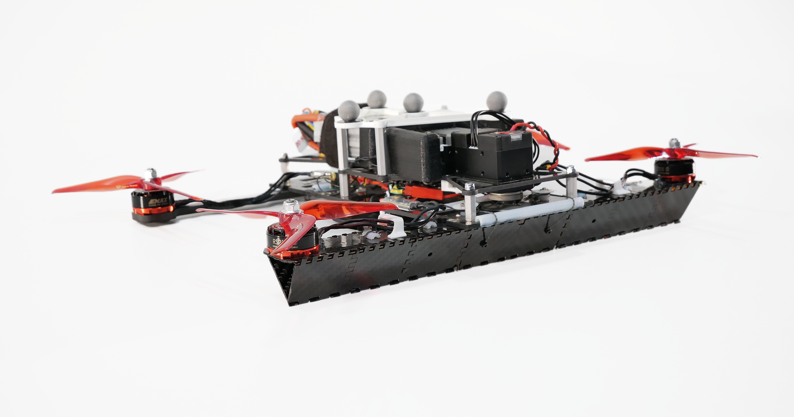
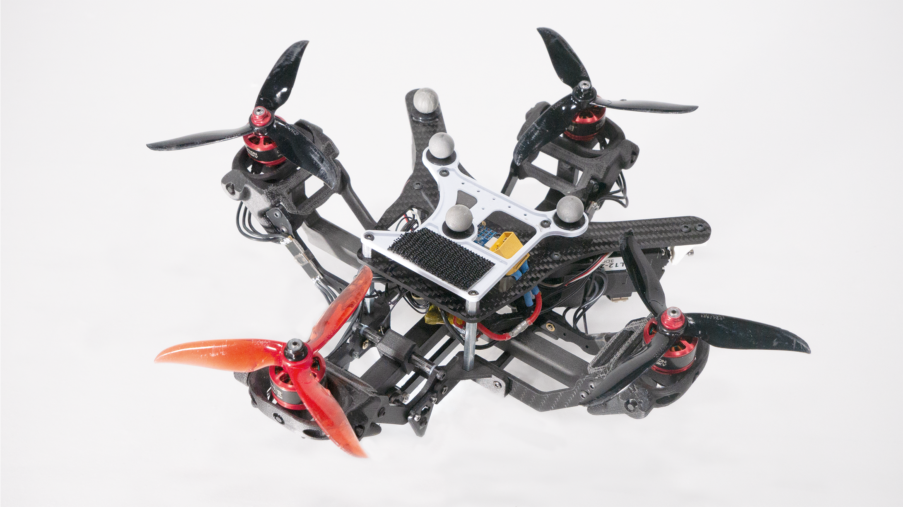
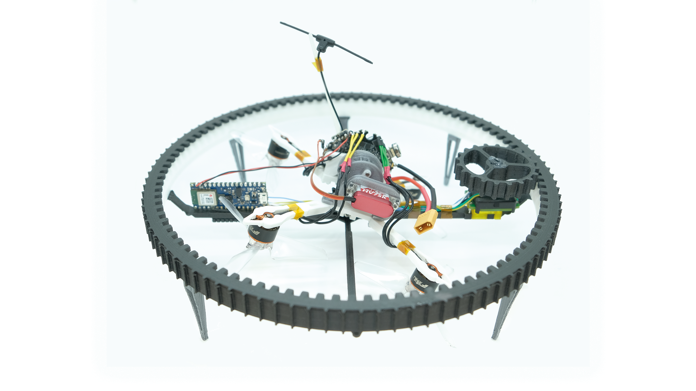
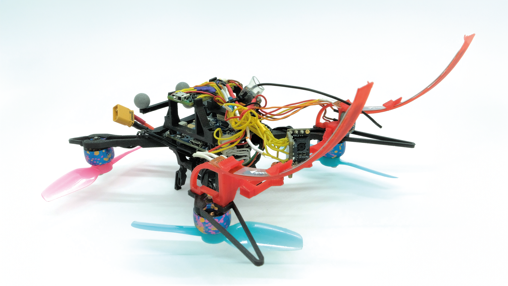

An inquisitive generalist roboticist PhD graduate from Imperial College London. My expertise spans a diverse array of topics within the robotics field, including the design of perching mechanisms and morphing quadcopters. I possess a strong foundation in mechatronics and control systems, coupled with a keen proficiency in electronics design, complemented by my current research on supervised learning with micro drones. I enjoy hands-on problem-solving and asking philosophical questions to find innovative solutions. Below, I'm excited to share some of the projects that encapsulate my journey and achievements in robotics.
Wang, Z., Zheng, P., Kocer, B. B., & Kovac, M. (2023). Drone-Based Solar Cell Inspection With Autonomous Deep Learning. Infrastructure Robotics: Methodologies, Robotic Systems and Applications.
Zheng, P., Xiao, F., Nguyen, P. H., Farinha, A., & Kovac, M. (2023). Metamorphic aerial robot capable of mid-air shape morphing for rapid perching. Scientific Reports, 13(1), 1297.
Kocer, Basaran Bahadir, et al. "Forest drones for environmental sensing and nature conservation." 2021 Aerial Robotic Systems Physically Interacting with the Environment (AIRPHARO). IEEE, 2021.
Xiao, F., Zheng, P., Di Tria, J., Kocer, B. B., & Kovac, M. (2021). Optic flow-based reactive collision prevention for mavs using the fictitious obstacle hypothesis. IEEE Robotics and Automation Letters, 6(2), 3144-3151.
Farinha, A., Zufferey, R., Zheng, P., Armanini, S. F., & Kovac, M. (2020). Unmanned aerial sensor placement for cluttered environments. IEEE Robotics and Automation Letters, 5(4), 6623-6630.
Zheng, P., Tan, X., Kocer, B. B., Yang, E., & Kovac, M. (2020). TiltDrone: A fully-actuated tilting quadrotor platform. IEEE Robotics and Automation Letters, 5(4), 6845-6852.
Zhang, K., Zhu, Y., Lou, C., Zheng, P., & Kovač, M. (2019, April). A design and fabrication approach for pneumatic soft robotic arms using 3D printed origami skeletons. In 2019 2nd IEEE International Conference on Soft Robotics (RoboSoft) (pp. 821-827). IEEE.
Aaron Tremper. (2023). "Meet robots on a mission to help birds: A perching spy". Science News Explores.
Joanna Wormald. (2017). "New laws introduced to regulate drones". Felix, Issue 1678.